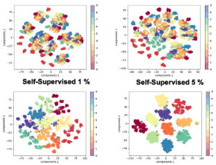

About Me
I am a MS student in the DAVIAN Lab at KAIST AI advised by Jaegul Choo.
I received the Bachelor of Science in Biz&Tech Management and Industrial Engineering in 2020, at Korea Advanced Institute of Science and Technology.
I am particularly interested in applying ML/DL technologies in the real life services.
In other words, research areas necessary for deploying AI models and where people and AI are in contact with each other make me enthusiastic.
I have conducted a study to consider the personal style on machine-translated output.
Recently, I am interested in learning de-biased representation in natural language processing and computer vision fields.
More broadly, my research interests are in the areas of robustness, fairness, multimodal learning, and various natural language processing topics.
Full resume →
Beside the research, I am into music, classical music, travel, health, book, coffee and love.
Publications
PePAL: Personalized Post-Editing via Cluster-Aware Adversarial Learning
Jihyeon Lee, Taehee Kim, Yunwon Tae, Chunbok Park, Jaegul Choo
(Under Review)
[Paper]
[Code]

Exploring Self-supervised Learning for De-biased Representation
Jihyeon Lee, Eungyup Kim, Jaegul Choo
(Working Paper)
[Paper]
[Code]